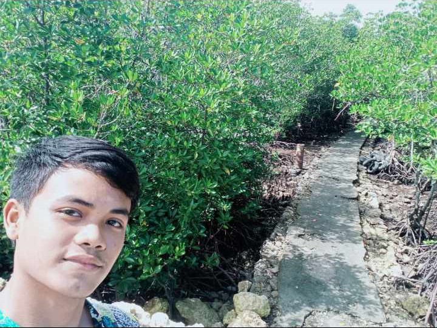
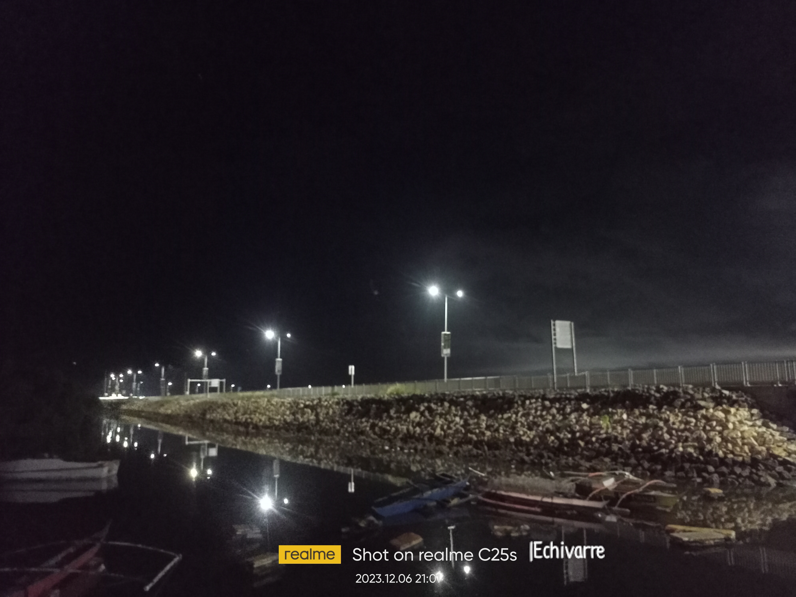

CENTENNIAL ROAD is one of the environment in our beloved cordova it is famous in people in cordova it has more streets foods that sure you can enjoy ,and at the end of it you can breath a fresh air came from the sea , and also it has station of foods that offer sea foods that we want to eat.
It is famous place for good event is being held like dinagat festival in cordova all baranggay should participate this event and common places that can be used is Centennial Road Cordova ,becuase it has wide area and perfect place for big events like festivals and concerts .
When you plan to visit it is located beside the solea resort and roro port , also you can do jogging there or rides and more .
MANGROVE SANCTUARY

MANGROVE SANTUARY is known as the environment of bangbang cordova it is located nearly in cclex bridge it was planted long time ago by students and people in bangbang to help the environment of mangrove grow wider and wider ,it helps the fish re create more fish and also any kinds of living sea.
We all know mangroves is very used and important to our environment especially in the sea ,it give balance to our beaches or fisherman's spot to catch fish for goods
Mangroves is a plant that made also fish and crab think that its home , fisherman said under the mangrove tree is the most fish count and crab count , so in this we obviously know that mangrove can help us our daily life.
CCLEX 3rd Bridge

3rd BRIDGE OR CCLEX BRIDGE known as environment in our society it gains taxes day by day and if you have a appointment and theres no time left you can ride along in cclex bridge ,it has nice view up there and fresh air , it is located in Ibabao Crdova Cebu.
CCLEX is very famous by its called the longest bridge in Philippines, and we can be very thankful that this longest bridge is build in cordova , we can easily go the city by just one ride .
For me we should visit CCLEX bridge because it is one of the environment in cordova that we must proud of .